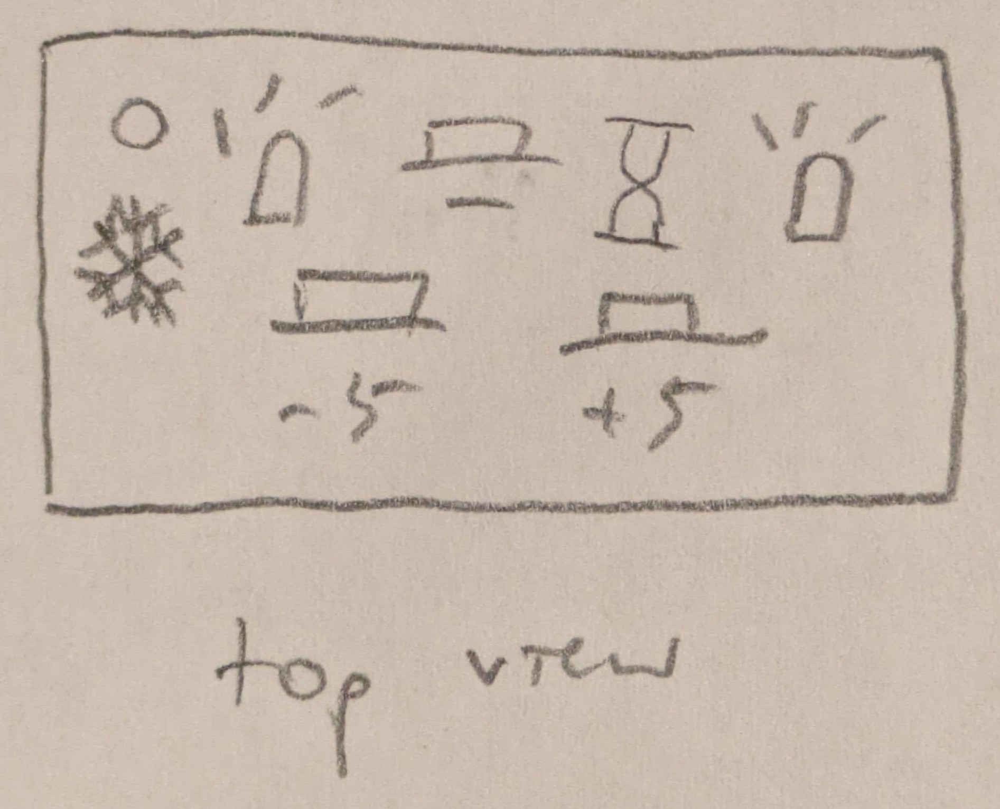

Heidi Wang's Final Project: Study Watcher

- Project Concept/Motivation:
- Sometimes I lose track of time and don’t notice when it’s really cold in my room while I’m studying, so the thermometer part will light up when it gets too cold in the room and the stopwatch part will help me use time blocks to stay focused while studying.
- Anticipated Bill of Materials:
- Thermistor: temperature sensing
- Pushbutton: to start stopwatch
- RGB LEDs: visual output for both parts
- Resistors: for current-limiting
- Timeline and contingency plans:
- Mon Nov 24: schematic, functional circuit completed
- Mon Dec 1: physical components completed
- Mon Dec 8: project materials completed
- If something goes wrong with the thermistor, I will replace it with a photocell